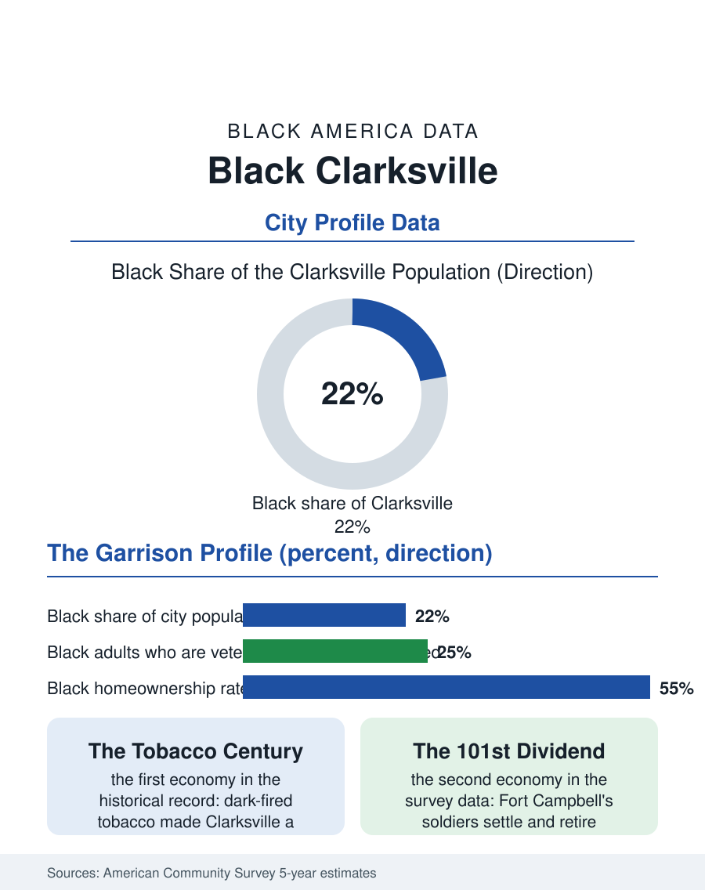

Black Cities
Tobacco and the 101st: Black Clarksville
Tobacco built Clarksville's Black community and Fort Campbell's 101st Airborne rebuilt it larger, a garrison town of thirty-eight thousand and growing. The Clarksville file.

Clarksville, Tennessee's fifth-largest city, sits on the Kentucky line with a Black population of roughly thirty-eight thousand in a city of about one hundred seventy thousand, around twenty-two percent, a share built by two economies layered a century apart: the dark tobacco trade that once made Clarksville a global market town, and Fort Campbell, the vast Army post straddling the state line whose soldiers and veterans fill the modern census. This article reads the Clarksville file.
Tobacco, Then the 101st
The tobacco century came first. Clarksville was among the world's great dark-fired tobacco markets, its warehouses auctioning the leaf that Black farmers grew across the Tennessee-Kentucky border country and Black warehouse labor handled in the city, and the community formed in the neighborhoods around the tobacco district and the Black business corridor, building its churches and its segregated school, Burt High, whose alumni tradition organizes the community's memory to this day. The industry's decline after mid-century coincided with the arrival of the second economy: Fort Campbell, activated in the Second World War and grown into the home of the 101st Airborne Division, became the region's permanent employer, and the post's expansion wrote the modern city, subdivisions marching north and east, retail following the families, and the Black population compounding through the military channel this atlas records everywhere the flag is planted, soldiers arriving from everywhere, marrying, settling, and retiring into a community whose cost of living made the military pension a local fortune. Austin Peay State University added the college stream, its Black enrollment and staff anchoring a third, smaller pillar.
The Numbers on the Cumberland
The American Community Survey profile carries the military's signature as strongly as any file in this atlas: a young population by Black America's standards, since soldiers and their families skew young; veteran share among Black adults at the top of the atlas's range; household incomes stabilized by military pay tables and retirement annuities in a pattern that compresses the racial income gap relative to the state's other metros; and homeownership built substantially through VA lending in the subdivisions the post's growth financed. The counterweights are the garrison economy's own: the spouse employment problem, military spouses, disproportionately women, underemployed against their credentials in a market sized for the post; the deployment cycle's strain registered in the family data; and the civilian segment of the Black workforce, in health care, logistics along the interstate corridor, and the schools, earning the region's civilian wages beneath the military floor. Population growth is the file's headline: Clarksville has been among Tennessee's fastest-growing cities for two decades, and its Black population has grown in absolute terms with each survey cycle, fed by the post, by Nashville's housing prices pushing families up the interstate, and by retirees choosing the community their service introduced them to, a compounding the demographers expect to continue on every projection.
Burt High's Town, the Screaming Eagles' Home
The community's institutions carry both inheritances. Burt High's alumni association is the tobacco century's living treasury; the churches span both eras; the Divine Nine chapters at Austin Peay and the military sorority and fraternity networks of the post's families layer a second organizational grid over the first. Political representation has integrated the city and county governments in the modern pattern, with the community's vote a decisive constituency in a city whose politics must answer to both the base and the town. The forward file is growth management: the subdivisions' schools, the corridor's traffic, the water and sewer lines chasing the rooftops, the ordinary problems of a boom that has lasted twenty years, contested in council chambers where the Black community's century in Clarksville and the newcomers' arrive in the same subdivisions. The Clarksville file closes with the two economies' joint product standing in one survey: tobacco's descendants and the Airborne's retirees in the same neighborhoods, a Black population of nearly forty thousand in a border city most national maps treat as a Nashville suburb, holding a share above a fifth and growing. The census will keep finding it there, under the flight path of the Screaming Eagles, on ground its tobacco farmers worked before the post existed, rooted in both centuries at once.
More in Black Cities
Black Atlanta: Population, Distribution, and Growth of a Black Metropolis
Metro Atlanta holds more than two million Black residents — roughly one in three, second only to New York. The suburban distribution, migration history, and composition of Black Atlanta in the census data.
Black New York: The Largest Black Population in America
The New York metropolitan area holds about 3.4 million Black residents — more than any metro in the nation — and the city itself about two million. The census profile.
Black Washington: The District and the Metro
The Washington metro holds about 1.6 million Black residents, and the District itself — long a majority-Black city — now records a Black share near 41 percent. The census profile.
Source: U.S. Census Bureau, American Community Survey 5-year estimates for Clarksville, TN; Tennessee state historical records.